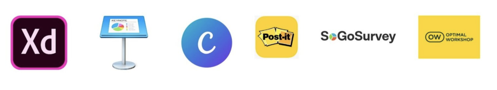

As a UX Design student at Career Foundry, I was asked to create a mobile app for tattoo enthusiasts to explore designs and connect with artists. Having a tattoo, I understood how important it is to choose the right tattoo, mine took me 6 years to decide where and what to get. I would’ve loved to have an app that would guide me in finding the perfect tattoo.
Problem
Ink Tank users need a simple way to find a tattoo design. A stress-free experience from being inspired all the way to booking the appointment.
Goal
Provide users with an intuitive way to browse designs, save designs, connect with artists, and find reputable studios near them.
Method
Market research, Interviews, User flow, Wireframes, Mood board, Competitive Analysis, Affinity Mapping, User Journey & Agile Development
Tools
Research Goals
Define users’ motivations, needs, and frustrations when looking for tattoo designs and artists. Understand what makes for a great experience for a user when getting a tattoo. So many emotions are involved when getting a tattoo, I want to Identify frustrations and pain point for users when searching for designs Define what behaviors users have while searching for an artist and what is important to them to learn about the artist.
Competitor Research
I conducted competitor research of two apps, looking for strengths and weaknesses. This helped me to see what was out there for users to find tattoo designs, discover artists and locate studios. This was a great opportunity to see what was working in each app that I could possibly use. Also to see what wasn’t working as well and could, in turn, be improved for Ink Tanks users.
See full competitive analysis